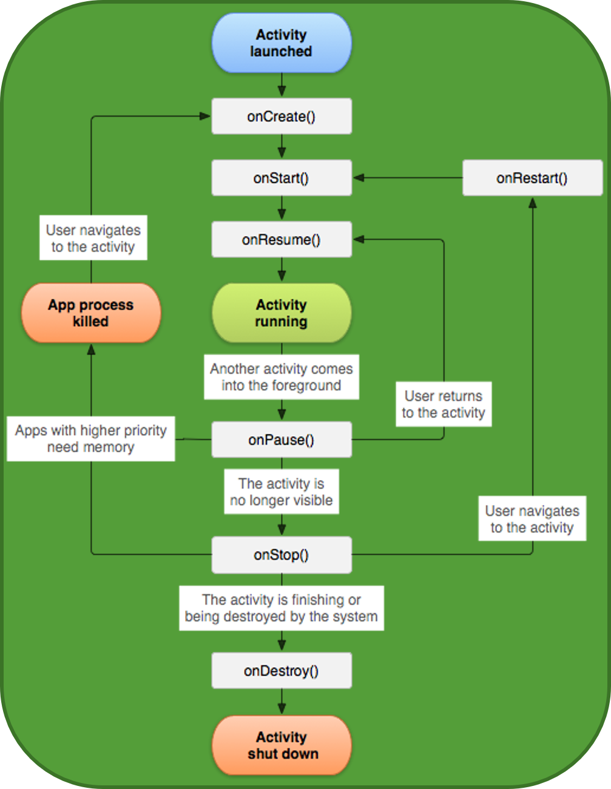
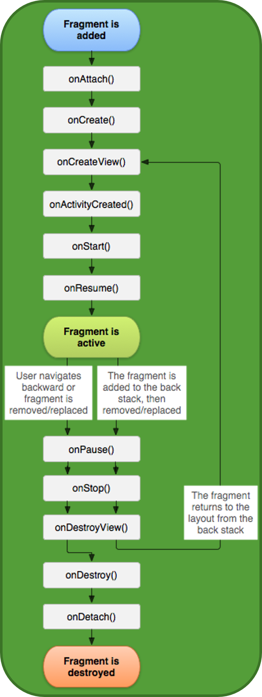
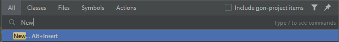
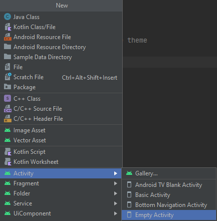
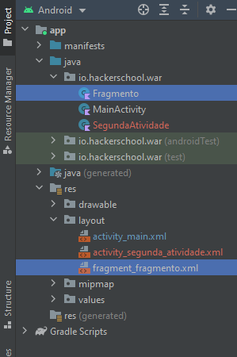

Activity VS Fragment
Esta página é um pouco extensa, recomendo irem com calma
No android, cada página pode ser vista como uma atividade ou como um fragmento:
Activity: An activity is a single, focused thing that the user can do. Almost all activities interact with the user, so the Activity class takes care of creating a window for you in which you can place your UI with setContentView(View)
Fragment: A Fragment represents a reusable portion of your app’s UI. A fragment defines and manages its own layout, has its own lifecycle, and can handle its own input events. Fragments cannot live on their own–they must be hosted by an activity or another fragment. The fragment’s view hierarchy becomes part of, or attaches to, the host’s view hierarchy.
Podendo ajudar a analogia de uma atividade ser um caderno para uma cadeira. Vai-se gastar mais recursos em manter e comprar mais cadernos, mas consegue-se fazer todo o que se pretende nele. Contudo, se se utilizar e reutilizar as folhas que o mesmo contem para as mais várias cadeiras, então poupa-se recursos e talvez utilizar a mesma folha para várias ocasiões ou até reutilizar uma já usada. A relação entre atividade e fragmento é o mesmo, onde atividades são mais poderosas, mas gastam mais recursos, enquanto fragmentos são mais leves e conseguem ser reutilizados para outras ocasiões. Até se pode ter múltiplas janelas na aplicação e todas elas são geradas a partir do mesmo fragmento, mas em instâncias diferentes. Ver Slide de Apresentação como exemplo/tarefa.
LifeCycle
Tanto a atividade como o fragmento têm os seus ciclos de vida, sendo que no backend se fez mais num dos passos do ciclo de vida da atividade. É importante ter uma noção de a atividade passa por estas fases, pelo simples facto de ser necessário registar certos Listeners ou funções internas que estejam dependentes da atividade ou fragmento, isto é, só está ativo se estes estiverem ativos e desativado quando estes estiverem desativados da mesma forma.
| Ciclo da Atividade | Ciclo do Fragmento |
|---|---|
|  |  |
Atividade
Implementação
Imagine-se que se implementa mais um botão no menu do backend, debaixo do anterior, para poder ativar uma atividade:
<!-- RelativeLayout -->
<Button
android:id="@+id/btn_atividade"
android:layout_width="wrap_content"
android:layout_height="wrap_content"
android:text="Click me!"
android:layout_centerHorizontal="true"
android:layout_below="@+id/txt_menu"
/>
<!-- RelativeLayout -->
Com este, tem-se que a sua implementação fique da seguinte maneira no backend (ter atenção para ver do Intent para poder prosseguir com este exemplo):
// No onCreate
val btnAtividade : Button = findViewById(R.id.btn_atividade)
btnAtividade.sestOnClickListener {
// Usando o intent para ativar a nova atividade
val intent = Intent(this, SegundaAtividade::class.java)
startActivity(intent)
}
O que este pedaço de código faz é simplesmente começar uma nova atividade, sendo a mesma chamada SegundaAtividade.
Ora, isto em principio daria erro, pois esta atividade não existe. Sendo por isso necessário criar os ficheiros necessários para essa mesma nova atividade
Adicionar atividades
Para adicionar uma atividade, tem-se, como uma das vias, usar a palete de comandos com carregar no Shift duas vezes rapidamente.
Daí, escreve-se New e carrega-se em:

De seguida, escolhe-se a opção Empty Activity como ilustra a imagem:

Aparecerá um prompt e daí se escreve o nome de SegundaAtividade. Carregando em Finish, ter-se-á criada a nova atividade e, consequentemente, poder-se-á correr a aplicação, carregar no botão e a mesma irá mostrar a nova atividade!
Fragmento
Implementação
Para a sua implementação, este processo é mais manual, sendo necessário neste caso gerar um ficheiro para o backend, .kt, e para o frotend, .xml.
Para tal, abra-se a aba do projeto e carrega-se com o botão de lado direito na pasta que tem ambas atividades no backend e gera-se um novo ficheiro/class para o fragmento - Fragmento.kt.
Repete-se este processo para a pasta dos resources ou res, mais nomeadamente carregar com o botão do lado direito do rato na pasta dos layout e criar um Layout Resource file - fragment_fragmento.xml.

Agora com as bases feitas, só se precisa de ir, na imagem anterior, a Gradle Scripts -> build.gradle (Module: ...) e acrescentar esta linha dentro das dependencies:
implementation 'androidx.fragment:fragment-ktx:1.4.0'
E ter de dar Sync Now ao projeto, num friso azul que esteja em cima.
Pondo isto, agora tem-se o necessário para chamar o fragmento.
Chamar o fragmento
Para se poder adicionar o fragmento na atividade, tem-se de alterar o layout de ConstrainLayout para relative no activity_segunda_atividade.xml acrescentar o seguinte:
<androidx.fragment.app.FragmentContainerView
android:id="@+id/container_fragment"
android:layout_width="match_parent"
android:layout_height="wrap_content"
android:layout_alignParentTop="true"
android:layout_above="@id/txt_atividade"
/>
<TextView
android:id="@+id/txt_atividade"
android:layout_width="match_parent"
android:layout_height="wrap_content"
android:text="Isto é a atividade"
android:textAlignment="center"
android:layout_alignParentBottom="true"
/>
No SegundaAtividade.kt, acrescenta-se o seguinte dentro de onCreate:
supportFragmentManager.commit {
add<Fragmento>(R.id.container_fragment)
}
Em principio, ter-se-á erros no commit e no add.
Para resolver os mesmos, tem-se que dar import no primeiro - carregar Alt+Enter com o cursos em cima do commit - e no segundo tem-se que criar o fragmento internamente.
Para tal e para se poder acrescentar algum elemento e interagir com o fragmento da mesma maneira que a atividade, tem-se no Fragmento.kt que converter o mesmo para:
import android.os.Bundle
import android.view.View
import androidx.fragment.app.Fragment
class Fragmento : Fragment(R.layout.fragment_fragmento) {
override fun onViewCreated(view: View, savedInstanceState: Bundle?) {
super.onViewCreated(view, savedInstanceState)
/**
* O onViewCreated age de forma semelhante que o onCreate,
* precisando neste caso acrescentar o *view* antes do
* findViewById.
*
* Ex.:
* val btnView : Button = view.findViewById(R.id.btn_fragmento)
*
* Teria de haver um botão no fragment_fragmento.xml para este
* pedaço de código ter efeito sem erros
*/
}
}
Agora, o add da atividade que se estava a mexer anteriormente apresenta um erro que se resolve com um import do mesmo modo que o commit.
Com isto tudo, tem-se uma atividade e um fragmento acrescentados e se se correr a aplicação, tem-se que tudo corre perfeitamente.
Agora, fica como desafio acrescentar outros elementos no fragment_fragmento.xml para se poder interagir com o fragmento como fora feito com a atividade.
Exemplo: criar um botão e um objeto <View/> no layout a fim do botão criar cores aleatórias. Baseado neste exemplo. (colocar o exemplo no repositório).